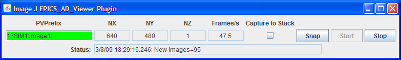

ImageJ EPICS_AD_Viewer plugin display window

One of the advantages of areaDetector is that it enables the use of generic image display clients that obtain their data via EPICS Channel Access and work with any detector. There are currently two such generic clients provided with the areaDetector distribution. The first is a plugin for the popular ImageJ Java-based image processing program. The second is an IDL-based viewer which can be run without an IDL license under the IDL Virtual Machine. Because ImageJ is free and more widely available and used than IDL, future enhancements are more likely to be done on the ImageJ plugin rather than the IDL viewer.
This is a plugin for the popular ImageJ program that can be used to display 2-dimensional array data that the NDStdArrays plugin sends to EPICS. This plugin is contained in the areaDetector distribution in the Viewers/ImageJ/EPICS_areaDetector directory. This plugin was begun by Tim Madden from APS, and now includes support for all NDArray data types and color modes, i.e. Mono, RGB1 (pixel interleave), RGB2 (row interleave) and RGB3 (plane interleave). The plugin directory includes a plugin written elsewhere for reading and writing netCDF files, so ImageJ can be used to display images and image sequences (movies) saved with the NDFileNetCDF plugin. It also includes a dynamic profile plugin written elsewhere for line profiles that update in real time as new images are displayed or as the profile line segment is moved.
To use this ImageJ plugin do the following:
gov.aps.jca.Context.addr_list=localhost 164.54.160.255
gov.aps.jca.Context.auto_addr_list=false
gov.aps.jca.Context.max_array_bytes=100000000
With the Windows installation of ImageJ <jre home> will typically be C:\Program
Files\ImageJ\jre\lib. On Linux it will be wherever the jre/lib directory for Java
is located. Note that it should be necessary to create such a configuration file
on almost all areaDetector clients because the CAJ default value of max_array_bytes
is 16384, which will be too small for almost any detector. However, it appears that
the CAJ library actually ignores the value of max_array_bytes, so it is not actually
necessary to set its value for the EPICS_AD_Viewer plugin.
The control window for EPICS_AD_Viewer is shown below. The PVPrefix
field is used to input the base name of the EPICS PVs with the image data. The array
dimensions and the number of frames
per second actually being displayed by ImageJ is shown. There is a status window that
shows whether the EPICS PVs are connected and the number of arrays received since the last
update, which is every 2 seconds.
To capture a sequence of images into an ImageJ "stack" select "Capture To Stack". The image sequence will be stored in the ImageJ buffer and a scroll bar will appear to allow you to scroll through the images. The stack can be saved to disk in a large number of formats, including AVI.

This is the.
There is an IDL procedure called
epics_ad_display that can be used to display 2-dimensional array data that
the NDStdArrays plugin sends to EPICS. This
IDL client is available as source code (which requires an IDL license), and also
as a pre-built IDL .sav file that can be run for free under the IDL Virtual Machine.
This IDL program can run on any machine that IDL runs on, and that has the ezcaIDL
shareable library built for it. This includes Windows, Linux, Solaris, and Mac.
epics_ad_display is included in the
CARS IDL imaging software. It is also available in the Viewers/IDL directory
in the areaDetector application.
The Viewers/IDL directory contains both the IDL source code and a standalone IDL file, epics_ad_display.sav, for the epics_ad_display GUI to display images from areaDetector detectors. This file can be run for free on any Linux or Windows system under the IDL Virtual Machine, which can be downloaded free of charge from ITT VIS. That directory also contains the shareable libraries used to call EPICS Channel Access from IDL (ezcaIDL.dll for Windows and libezcaIDL.so for Linux). Before using the IDL source code or .sav file it is necessary to define the environment variable EZCA_IDL_SHARE to point to the complete path to ezcaIDL.dll or libezcaIDL.so. For example on Linux:
setenv EZCA_IDL_SHARE /home/epics/support/areaDetector/1-5/Viewers/IDL/libezcaIDL.so
On Windows use
My Computer/Properties/Advanced/Environment Variables/
to add a new environment variable EZCA_IDL_SHARE to point to the location of ezcaIDL.dll on your system. To run the standalone IDL epics_ad_display.sav file without an IDL license exectute the following on Linux:
idl -32 -vm=epics_ad_display.sav
On Windows simply double-click on the icon for the epics_ad_display.sav file.
When the GUI comes up type the base PV name for the NDStdArrays plugin for your detector in the "Base PV" widget. For example with the simulation detector supplied with the areaDetector application this is "13SIM1:image1:" (without the quotes). Once the detector begins acquiring images they should be displayed in the IDL window.
To run the GUI from the IDL command line on a system with an IDL license type the epics_ad_display command followed by the base PV name of the NDStdArrays plugin. For example:
IDL> epics_ad_display, '13SIM1:image1:'
The control window for epics_ad_display is shown below. It has a field
to input the base name of the EPICS PVs with the image data. It also has fields
to enable/display the IDL display update, to change the display mode, to autoscale
the intensity, and to invert the image in the Y direction. If autoscale is set to
No then manual scaling can be entered in the Min and Max fields. The number of frames
per second actually being displayed by IDL is shown. There is a status window that
shows whether the EPICS PVs are connected and the time the last was array received,
updated once per second.

epics_ad_display can use the simple IDL routine tv to
display the images. This is the fastest mode, and results in a non-scalable unadorned
window.
tv routine.

epics_ad_display can also use the routine
image_display.pro to display the images. This routine displays row and column
profiles as the cursor is moved. It allows changing the color lookup tables, and
zooming in (right mouse click) and out (left mouse click). Note that image_display
is not currently capable of displaying color data i.e., RGB1, RGB2, or RGB3 NDArrays).
It can however, display Mono data in false color. The following is an example of
image_display displaying an image from the simulation detector.

The Viewers/IDL directory also contains an IDL function to read the areaDetector netCDF files. This is described in the NDPluginFile netCDF documentation.
Stephen Mudie at the Australian Synchrotron has written a very nice IDL client to display the EPICS images from the Flea Firewire cameras. This client is being converted to display the data from this areaDetector plugin, and will be provided in a future release of areaDetector.